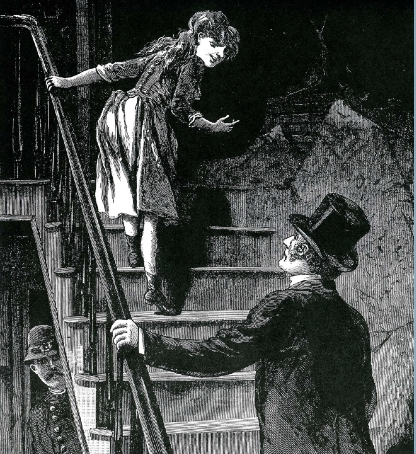

-1-MasterItem.svg)
Stories of Westminster United Church & its People / Page
13
Table
of Contents
Amid the climate of Christian-led moral campaigns against alcohol consumption
and prostitution — Reverend Frederick Du Val was emerging as one of the city’s most
vocal crusaders against local prostitution, whose purveyors had the nerve to ply
their trade right in his church’s neighbourhood (!), as elsewhere in the city. Even if
he hadn’t been the powerful orator that he was, Du Val would likely still have
galvanized the city’s realtors behind his cause: whatever the moral costs of
prostitution, its presence tended to send a neighbourhood’s property values
plummeting. On the other hand, Chief of Police John McRae, took a more pragmatic
approach to the matter. His response in 1909 to Du Val’s agitation was, with the help
of long-time madam Minnie Woods, to set-up an isolated “free zone” along two
streets in Point Douglas where prostitution, alcohol, and other vices could be
indulged with relative impunity.
In addition to cleaning up Winnipeg’s more affluent Centre and South, concentrating
prostitution and vice in this manner would, so the reasoning went, make violent
crime easier to police. With the approval of the city’s Board of Commissioners, Winnipeg’s Red Light district was thus born, soon
earning Winnipeg the reputation as “the wickedest city in Canada.” There a black market, relatively free from government interference,
temporarily thrived, until a young woman, Giselle Robert, was murdered in her
brothel. Authorities could no longer look the other
way, and so the district was shut down. McRae’s attempt to control prostitution and crime had undone itself. Chastised,
the Chief waxed poetic, “It is like the poor. Evil is always with us.”

Image above borrowed from the
Winnipeg Free Press
article
City Beautiful, How architecture shaped Winnipeg’s DNA
,
by Randy Turner.
established the Manitoba Club, whose ranks supplied the province’s Mayors, Premieres,
and Lieutenant Governors for generations. George died at his Winnipeg residence
at 89 Eastgate in the fall of 1924.
Our Founders